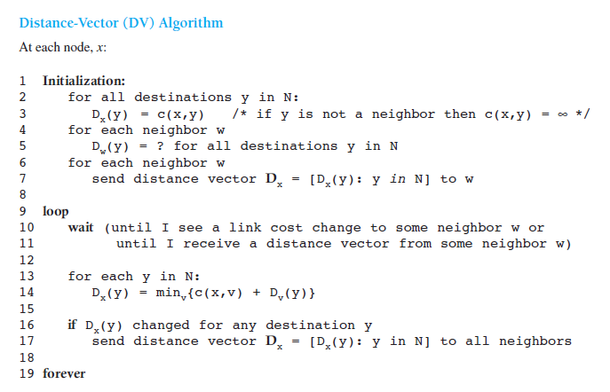

CHAPTER 4.5.1 The Distance-Vector (DV) Routing Algorithm
- The problem of routing a packet from source host to destination host clearly boils down to the problem of routing the packet from source router to destination router
- The purpose of a routing algorithm is then simple: given a set of routers, with links connecting the routers, a routing algorithm finds a “good” path from source router to destination router.
-
A global routing algorithm computes the least-cost path between a source and destination using complete, global knowledge about the network. That is, the algorithm takes the connectivity between all nodes and all link costs as inputs. This then requires that the algorithm somehow obtain this information before actually performing the calculation. The calculation itself can be run at one site
- The key distinguishing feature here is that a global algorithm has complete information about connectivity and link costs.
- algorithms with global state information are often referred to as link-state (LS) algorithms, since the algorithm must be aware of the cost of each link in the network.
-
dx(y) = minv{c(x,v) + dv(y)}
- after traveling from x to v, if we then take the least-cost path from v to y, the path cost will be c(x,v) + dv(y). Since we must begin by traveling to some neighbor v, the least cost from x to y is the minimum of c(x,v) + dv(y) taken over all neighbors v.
-
